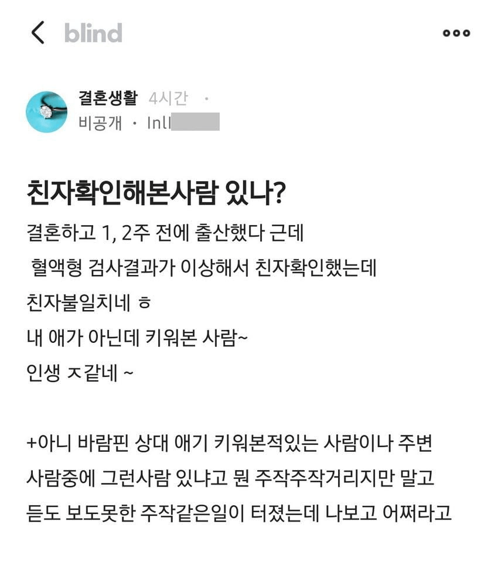
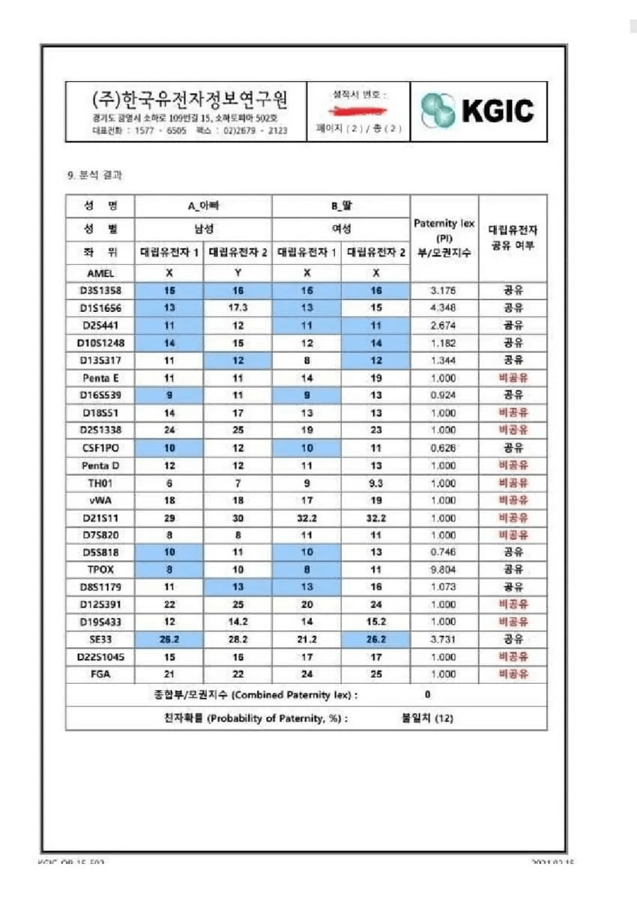

엄.....


엄.....
너 수능 언어영역 몇점 받음?ㅋ
장애있는사람놀리지마라
내가 국평오였네 씨부럴ㅋㅋㅋㅋㅋㅋㅋㅋㅋㅋㅋㅋ
국평오가 조스로보이노 ㅋㅋ
2주안에 혈액형에 친자검사에 다 돼? 난 해외사는데 아직 불안정하다고 한달검진때 다 알려준다던데 혈액형
뇌가 녹았나
당연히 되지 무슨 혈액형, 유전자가 2주후에 바뀌는게 아님.
이런건 후기가 더 궁금한데
대립유전자 공유여부가 공유가 된건 뭐임
유전자체계가 같은걸 가진 사람들이 있을수있음??
부모 유전자한테서 반씩 물려받으니까 자식이면 적어도 대립유전자 둘 중 하나는 같아야지. 비공유라고 된 건 아무 것도 맞는 게 없는 거.
내가 묻는건 아빠 머리카락이랑 딸래미 머리카락 같은걸로 dna비교했을거아님
비교대상이 아빠랑 딸래미인데
공유가 뜨는 이유가 뭐냐 묻는거임
저기서 엄마는 비교군으로 안넣었을거아냐
1.왼쪽에 적힌건 유전자 네임인데 특정 염색체의 특정 위치의 유전자를 지칭하는거
부모에게서 염색체를 절반씩 받아오기때문에 한 쌍의 유전자중 한가닥은 돌연변이가 아닌 이상 부모 중 한쪽과 같아야함
2.유전자는 부모에게 반씩 받는거임
음.. 미안 그럼 너의 말에 따르면
애아빠 유전자뿐만이 아니라 애엄마 유전자도 검사대상으로 들고간다는 말인거지??
지금 비교 대상군이 애 아빠랑 딸래미인데
공유라고 뜨는건 애아빠가 아닌 애엄마 이야기라는거지??
ㅅㅂ 내가 잘못이해하고있나?
너의 반은 아빠랑 같고 나머지 반은 엄마랑 같아
그건 알아 내가 저런 dna검사를 안해봐서
비교대상이 아빠랑 딸인데
엄마이야기가 나오는 이유가 뭔지 궁금해
엄마 얘긴 없는데?
아하 이해함.
염기서열이 완전히 다른건 존재하지 않는다.
Dna 저기서 공유라고 나오는건
아빠의 어머니 dna 염기서열과 딸래미 염기서열이 같은
여자면 가지고있는 염기서열을 이야기하는거네
완벽히 이해함 감사합니다
잘못 이해하고 있는 것 같은데ㅋㅋㅋ
엑
예로 X유전자에 대해서 아빠가 ab 이고 엄마가 cd이면
자식은 a OR b + c OR d 유전자를 갖게됨
근데 여기서 자식이 ac 이면 아빠의 유전자 a를 공유함
자식의 유전자가 fc이면 아빠의 유전자를 공유안함
다른 예로 아빠 ab 엄마 bc이면
자식은 ab ac bb bc 니까 f란 유전자가 나올 수 없음
자식이 bc이면 공유함 bf면 공유안함
엄마 유전자는 무조건 있을테니 b / f 는 모르는 남자의 것
신혼이면 일단 이혼하고 출생신고 했으면 친생부인의 소 걸고 안했으면 알아서 하라고 한다음 자기 이름 못올리게 해야지 뭐
이혼 전에 혼인무효 소송 걸어야 하는거 아닌가? 그렇게 해서 이기면 이혼 경력도 사라지는걸로 아는데
무효소가 생각보다 까다로워서 혼전임신인데 내 애가 아니고 일정기간 안지나야 할거임
내 친구가 딱 본문같은 상황이었는데
혼인무효 소송 해서 이겨가지고 지금 재혼해서 잘 살길래 ㅋㅋ
쎄하면 그냥 혼자 해도 상관없음
미리 친자검사 하네마네 하지말고
아마 전국에 알게모르게 남의 자식 키우는 사람들 많을거다
친자검사의무화 해야됨
작년 개드립에서 의무화하자던 글 있었는데
"니 애미가 바람펴서 너 낳아서 그럼?" 도배하고 다니는 미친 노괴년이랑
기른 정이 중요하지 어쩌구하는 인간 탕후루 새끼들 존나 많은거보고 대가리 띵해짐
서로서로 확실하게 하면 좋은건데,
저런걸 꼭 의심하는 거냐며 발작하는 사람들 많더라
왜냐면 의무화 했다간 바람핀게 걸리니깐
결혼하고 1~2주 전에 출산하는건 어떻게 하는거야. 결혼은 했고, 1~2주 전에 출산했다. 이렇게 써야지.
걍 남자만 참으면 모두가 행복한건데 퐁퐁이가 참고 넘어가는게 맞지
애 낳고도 혼인 신고 안하고 살면서
부부 둘이 각각 집 하나씩 사던데...
아내것도 비교해봐야 할듯... 애기가 바뀌었을지도 모름
애가바꼈는데 저정도일치면 그것도문제아냐?
그러면 딸이 한국인이 아닌 수준이 되어야 할껄?
뻐꾺뻐꾺~ 탁란 당했노 ㅋ~
이제 저런 가정을
탁란가정이라고 부르자~
말투에서 틀니냄새나요 ㄷㄷ
니인중 냄새요~
와 이 드립 ㄹㅇ 50대 아재들이 치는거잖아
껄껄껄!
아기 태어나자마자 혈액형 알려주는데 왜 그 땐 의심안했을까 궁금하네